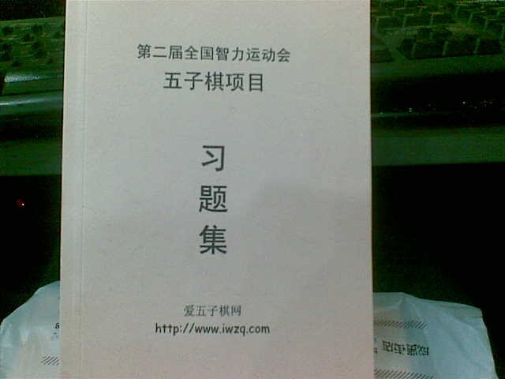
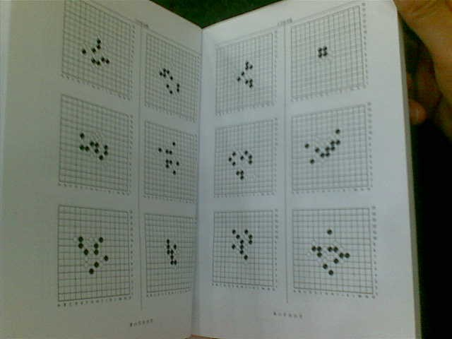

第二届全国智运会五子棋项目习题集
#1 <font color="red">第二届全国智运会五子棋项目习题集</font>作者：梧桐风 发表时间：2011-10-15 14:27:41
天狗120，三手120，三手附加240，ENJOY 500，日本考级200题,共计1200


注：Enjoy的题目都不考虑盘端.
［ 你就在我身边 于 2011-10-16 21:01:52 时花20金币送鲜花一朵］
［ 屏蔽 于 2011-10-17 6:23:28 时奖励此帖[金币加 100 威望加1］
［此帖子已被 屏蔽 在 2011-10-17 6:26:00 编辑过］
#2 Re:第二届全国智运会五子棋项目习题集作者：梧桐风 发表时间：2011-10-15 14:30:20
PS:丸子说他很好，大伙不要担心，你说要是不好的话也汇编不出这本习题集啊
［此帖子已被 梧桐风 在 2011-10-15 14:31:17 编辑过］
#3 Re:第二届全国智运会五子棋项目习题集作者：第五象限 发表时间：2011-10-15 16:33:19
与第二届全国智运会有什么关系#4 Re:第二届全国智运会五子棋项目习题集作者：踵酃 发表时间：2011-10-15 23:05:25
超远的VCF也来发几个吧
#5 Re:第二届全国智运会五子棋项目习题集作者：飞翔 发表时间：2011-10-16 18:16:38
我预定一本［此帖子已被 飞翔 在 2011-10-16 18:18:43 编辑过］
#6 Re:Re:第二届全国智运会五子棋项目习题集作者：吉小鼠 发表时间：2011-10-16 18:39:34
引用：供有兴趣的童鞋练习用的、、、、、、
原文由 第五象限 发表于 2011-10-15 16:33:19 :
与第二届全国智运会有什么关系
#7 Re:第二届全国智运会五子棋项目习题集作者：怪 发表时间：2011-10-16 20:43:43
 丸子牛叉，可以的话顺便把天羽习题里面的vct整理一下吧，再收集一些，可以做一份高级题集了。
丸子牛叉，可以的话顺便把天羽习题里面的vct整理一下吧，再收集一些，可以做一份高级题集了。#8 Re:第二届全国智运会五子棋项目习题集作者：用心学习 发表时间：2011-10-17 18:12:48
丸子辛苦啦。要是有解答那就更加强大啦。灰常灰常强大
#9 Re:第二届全国智运会五子棋项目习题集作者：闫荣辉 发表时间：2011-10-17 18:26:30
 安心养病，辛苦了。
安心养病，辛苦了。#10 Re:第二届全国智运会五子棋项目习题集作者：蓝天蓝 发表时间：2011-10-18 9:13:01
辛苦丸子了 ，要注意身体#11 Re:第二届全国智运会五子棋项目习题集作者：古尔丹 发表时间：2011-10-20 13:28:02
打发零散时间的好东西，给5星！
#12 Re:第二届全国智运会五子棋项目习题集作者：古尔丹 发表时间：2011-10-20 13:32:18
哇靠，居然没写黑胜白胜！汗啊！［ 没事摆石子玩 于 2011-10-20 18:14:35 时花50金币砸了你一个臭鸡蛋］